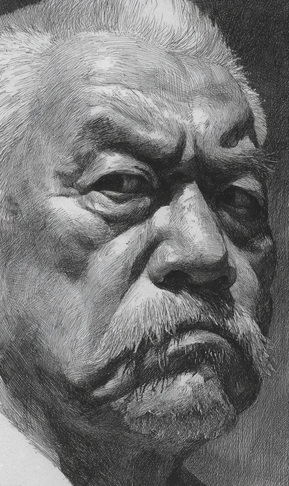

오후 네 시, 먹 냄새가 방을 가득 채웠다. 창호지 사이로 비스듬한 햇빛이 들어와, 먼지 알갱이 위에서 잠시 머물렀다.
[Four in the afternoon. The smell of ink filled the room. Slanted light came through the paper screen and rested for a moment on grains of dust.]
노 선생은 책상 앞에 앉아 있었다. 등은 굽었고, 하얀 머리카락이 이마 위로 내려와 있었다. 짙은 눈썹 아래 두 눈은 반쯤 감겨 있었지만, 그 안에는 오래된 불빛 같은 것이 흔들렸다. 입가의 콧수염은 양쪽으로 늘어졌고, 그 끝에는 옅은 먹 자국이 묻어 있었다.
[Master No sat at his desk. His back was curved, his white hair falling over his forehead. Beneath thick brows his eyes were half closed, yet within them flickered something like an old ember. His moustache drooped on either side, and at its tips clung a faint smear of ink.]
진우는 그 옆에 무릎을 꿇고 종이를 펼쳤다. 삼 년째 같은 자세였다. 방바닥에는 무릎 자국이 옅게 둥글게 남아 있었다. 선생의 손이 붓을 잡았다. 손가락 마디는 굵었고, 손등에는 강물 같은 핏줄이 흘렀다. 손톱 밑에는 평생의 먹이 검게 박혀 있었다.
[Jinwoo knelt beside him and unrolled the paper. The same posture for three years. On the floor lay a pale, round trace where his knees had pressed. The master’s hand took the brush. His knuckles were thick, and along the back of his hand veins flowed like rivers. Beneath his fingernails, a lifetime of ink was pressed black.]
붓끝이 종이 위에서 잠시 떨렸다. 그러나 떨림 안에서 글자가 태어났다. 한 획, 두 획. 먹이 종이를 깊게 적셨다. 선생의 손은 늙었지만, 글씨는 젊었다.
[The brush trembled briefly above the paper. Yet within the trembling, letters were born. One stroke, two. The ink soaked deep into the paper. The master’s hand was old, but the script was young.]
오늘은 무언가 달랐다. 선생의 시선이 종이를 향하지 않았다. 창밖, 비어 있는 마당, 감나무의 마른 가지, 그 너머 어딘가를 향하고 있었다.
[Today something was different. The master’s gaze did not face the paper. It looked through the window, toward the empty courtyard, the dry branches of the persimmon tree, somewhere beyond.]
“선생님.”
[Teacher.]
대답이 없었다. 붓은 계속 움직였다. 획은 흔들리지 않았다.
[No answer. The brush kept moving. The strokes did not falter.]
진우는 그제야 알아차렸다. 선생은 삼 년 동안 종이를 본 적이 없다는 것을. 손이 모든 것을 기억하고 있었다는 것을. 그리고 자신이 매일 펼쳤던 그 종이를, 단 한 번도 의심하지 않았다는 것을.
[Only then did Jinwoo understand. For three years the master had not seen the paper. His hand had been remembering everything. And the paper Jinwoo had unrolled every day, he had never once thought to doubt.]